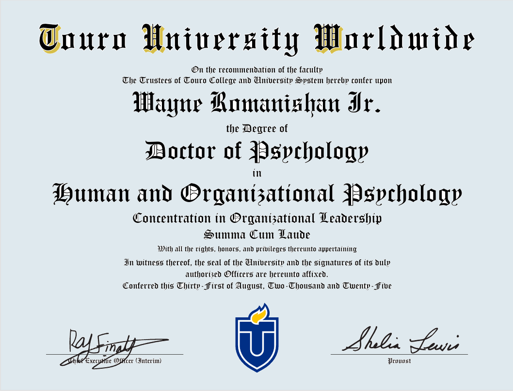

I began my career with steel, sweat, and fire. For decades, I worked in fabrication and
engineering design managing complex projects, training apprentices, and learning firsthand
how people and systems succeed or fail.
Along the way, I saw a troubling pattern: disengagement, burnout, and wasted resources
were not accidents, they were built into the very design of our organizations. That insight
led me to pursue advanced studies in psychology and leadership, earning my Doctorate in Human
and Organizational Psychology with a specialization in Organizational Leadership and Algorithmic
Psychology.
Today, I combine the precision of engineering with the depth of psychology to do more than consult.
I provide systemic solutions that make organizations and the people within them truly resilient.
My Epiphany
Business as usual is broken. The old ideology of growing the core, expanding endlessly, and maximizing profit at any cost is unsustainable for corporations, communities, or the planet.
We must replace throwaway goods and disposable talent with systems that reduce waste, extend the life of products, and honor the human need for purpose. Profit must come not from overproduction, but from resilience: minimizing loss, reducing inefficiency, and aligning work with meaning.
This realization drives my work as a Solutionist. I help organizations
redesign their workforce, workflows, and strategies around long-term resilience,
not short-term metrics.
The Romanishan Workforce Resilience Model (RWRM)
My doctoral research revealed how unprepared organizations were for generational transitions
in the workplace. Out of this research, I developed the Romanishan Workforce Resilience Model (RWRM).
A framework that shifts organizations from fragile engagement models to sustainable Resilient systems.
RWRM rests on four pillars:
Algorithmic Alignment – Systems that anticipate and prevent disengagement triggers.
Purpose Capital – Embedding meaning as a currency of motivation.
Adaptive Fear Reset – Replacing destructive fear with constructive challenge.
Generational Flow Integration – Turning generational diversity into organizational strength.
Together, these pillars create resilient organizations where employees thrive, waste is minimized,
and profits are sustainable.
I believe resilience is the true measure of organizational success. My mission is to help
companies move beyond outdated survey-driven engagement tactics and toward systems that integrate
people, processes, and sustainability.
I am committed to helping organizations design workforces that last, for their employees,
their industries, and the planet.
Research Credentials and Origins of the RWRM

The Resilient Workforce Resilience Model (RWRM) is the culmination of five years of rigorous
research, systems analysis, and human-centered design. The framework emerged from a deep
investigation into algorithmic psychology and the evolving dynamics of workplace culture.
At the heart of this work was a longitudinal study on Generation Z engineers, examining
their psychological preparedness, adaptive capacity, and emotional intelligence as they
entered a workforce strained by fear, fragmentation, and generational disconnect. What
began as a technical inquiry into workflow optimization evolved into a compassionate reckoning
with the hopes and vulnerabilities of a rising generation.
Through this lens, the research identified critical fault lines in traditional engagement models
and recognized the urgent need for a paradigm shift. The RWRM was born not merely as a theoretical
construct, but as a strategic response to a system on the brink—one that demanded enlightenment,
integration, and resilience.
Rooted in algorithmic alignment and informed by the lived realities of Gen Z professionals,
the RWRM offers a transformative pathway for organizations seeking to thrive in complexity.
It is more than a model; it is a movement toward sustainable, human-centric enterprise.